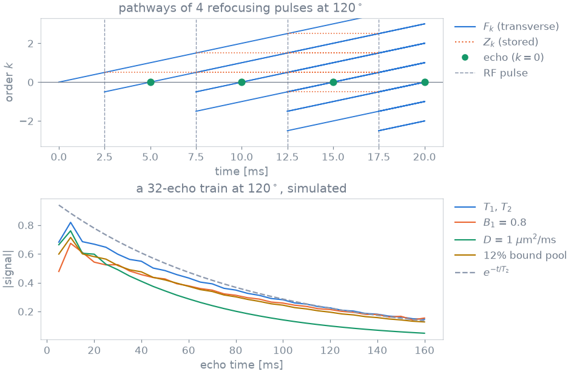

Extended phase graphs#
TL;DR
A voxel is held as configuration states over integer dephasing orders; the signal is the order-zero transverse state.
Pulses rotate within an order, gradients shift between orders, and relaxation, exchange, diffusion and flow act between events.
Every term beyond \(T_1\) and \(T_2\) is a tissue property: \(B_1\), \(B_0\), \(T_2'\), \(D\), \(v\), and up to five further pools.
You give a simulator a tissue, and the kernels carry its configuration states through every event of the sequence. This page states which physics those kernels hold. The derivations and the operator-by-operator detail are in Extended phase graphs: operators.
Capabilities#
Carries the states \(F^+_k\), \(F^-_k\) and \(Z_k\) up to the order set by
states.Show code and tests
Code:
Simulator(states),EpgEngine.simulate(nstates). Tests: a refocused train agrees echo for echo; a spoiled train agrees over two hundred repetitions (test_against_epgpy.py).Plays an unbalanced gradient as a shift by one order, and ideal spoiling as the loss of every transverse order.
Scales each flip angle by \(B_1\), turns its axis by the transmit phase, and combines per-channel sensitivities with a static RF shim.
Show code and tests
Code:
transmit_field,ShimDefinition. Tests: channels in antiphase cancel; the field is the complex sum written out (test_transmit_array.py).Integrates a shaped pulse into the rotation it performs across the slice, or per voxel when its channel weights vary while it plays.
Show code and tests
Code:
exact_slice_profile,transition_table,dynamic_pair. Tests: the slice shows up when the pulse selects one (test_exact_profile.py); the pair is what exponentiating each sample gives (test_dynamic_transmit.py).Plays a waveform sample by sample, with relaxation, precession and exchange between samples.
Show code and tests
Code:
SampledPulse(). Test: truefisp matches the bloch mcconnell equations (test_sampled_pulses.py).Applies a voxel’s off-resonance \(B_0\) and a Lorentzian field spread of width \(1/T_2'\) within it.
Show code and tests
Code:
TissueProperties(b0_hz,t2_prime_ms). Tests: a gradient echo decays at t2 star; a spin echo is left exactly as it stands (test_static_spread.py); the unrefocused time reproduces what the states compute (test_unrefocused_time.py).Couples to the free water a semisolid pool, saturated through a super-Lorentzian lineshape, and up to four chemically exchanging pools with their own \(T_1\), \(T_2\) and chemical shift.
Show code and tests
Code:
TissueProperties(bound_fraction,pool_b_fractiontopool_e_fraction),lineshape_table. Tests: the canonical saturation matches the literature number (test_bound_pool.py); exchange washes the beat out (test_exchange.py); fast exchange precesses at the population average shift (test_many_pools.py).Damps each order by diffusion and turns it through a flow phase, both weighted by its order, and replaces spins that leave the voxel with relaxed, unexcited ones.
Show code and tests
Code:
TissueProperties(diffusion_um2_per_ms,velocity_m_per_s). Tests: a declared crusher actually damps (test_diffusion_kernels.py); flow actually moves the signal (test_flow_kernels.py); washout only shrinks the signal (test_washout_kernels.py).
Division of responsibility#
Gradient moments other than one per sequence. Every unbalanced gradient winds one order, and diffusion and flow are scaled by one crusher moment,
crusher_dephasing_radacrossvoxel_size_m. A bipolar pair or a velocity-encoding lobe has no representation.Isochromat simulation. A field distribution within the voxel is the Lorentzian \(T_2'\) term on the samples, not a spatial ensemble.
Exchange between second pools. Each exchanges with the free water alone, and the semisolid pool’s \(T_2\) is fixed at 12 µs.
Relaxation during a tabulated rotation. A slice-profile or per-voxel rotation is a pure rotation;
SampledPulse()is the route when relaxation during the pulse matters.
Method#


Above, the pathways of a refocused train: a pulse continues, reflects or stores each state, and an echo forms where a transverse pathway reaches \(k = 0\). Below, the same train at 120° simulated with one tissue term at a time; the crushers wind 20 turns across a 1 mm voxel.#
Configuration orders#
A shift adds one order, and relaxation makes the far orders negligible. When
states is not given, it is one more than the shifts the played repetitions
contain, clamped to 8–64. The truncation error falls geometrically with the
number of orders, so a second run with more of them measures it.
Pulse rotation#
The RF definition decides, not the call: a rectangle without slice selection is an instantaneous rotation, any other shape a Cayley–Klein pair tabulated over slice position and effective flip angle, the hybrid Bloch–EPG treatment of Guenthner et al.[4]
Off-resonance#
Where the sequence winds at one steady rate, an order also measures how long a state has dephased, and \(B_0\) and \(T_2'\) are applied to each sample from that time: a gradient echo decays at \(T_2^*\), a spin echo at \(T_2\). Otherwise \(B_0\) precesses the states interval by interval and \(T_2'\) is refused.
The formalism follows Hennig[1] and Weigel[2], the second pools Malik et al.[3]
Examples#
2. Advanced physics: each tissue term added to a fingerprinting train in turn.
Echo train design for sharpness: refocusing flip angles of a fast spin echo designed through its simulated echo train.
RF pulse design by optimal control: a slice-selective pulse designed through the Cayley–Klein rotation of its samples.